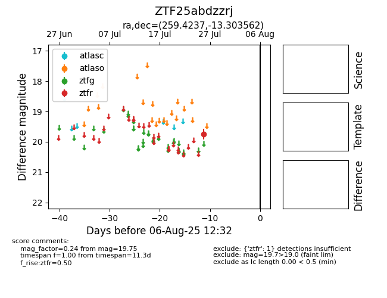

Target ZTF25abdzzrj at 2025-08-06 17:07, see:
FINK: fink-portal.org/ZTF25abdzzrj
Lasair: lasair-ztf.lsst.ac.uk/objects/ZTF25abdzzrj
ALeRCE: alerce.online/object/ZTF25abdzzrj
alt names
ZTF25abdzzrj (ztf,fink)
coordinates:
equatorial (ra, dec) = (259.4237,-13.30356)
galactic (l, b) = (9.8083,+13.85951)
photometry
last ztfr=19.75
1 ztfr detections
